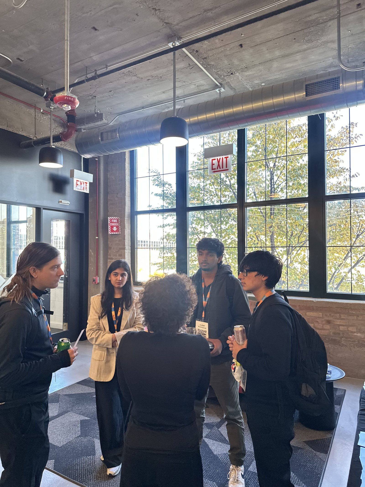

Connecting campaign performance to the customer journey.
Reconstructed for portfolio presentation from the campaign scope and analysis I worked on. Only documented results are shown numerically: +9%, 5+, 6.
Which campaign and messaging signals should influence the next customer touchpoint?
At iStash, my work sat across digital campaigns and customer acquisition. I supported marketing across paid, email, and search while also working close to merchant acquisition, giving me visibility into both campaign response and what happened further along the customer journey.
Marketing & Growth. Read campaign performance across paid, email and search; designed and ran creative and messaging tests; supported customer acquisition and merchant onboarding; and shaped the welcome-message journey.
Campaign performance reporting across paid, email and search; 5+ creative and messaging variants tested against each other; and the merchant and user acquisition journey, including the welcome-message copy delivered at each touchpoint.
Read performance across all three channels side by side rather than in isolation, tested creative and messaging variations against each other, then traced where the strongest-performing pattern showed up again in the acquisition and welcome journey.
Analysis 01 · Cross-channel performance
Analysis 02 · Creative & messaging testing
Actual creative variants. Testing lens: creative, messaging, audience response. Exact per-variation performance isn't available to reproduce, so no winner or percentage is shown by variation; the documented result is the +9% aggregate lift.
Analysis 03 · Acquisition
Merchant + user journey. No conversion-rate percentages shown. 6 is the only numeric acquisition proof.
Analysis 04 · CRM
Merchant copy · User copy · Automated touchpoint: audience-specific messaging at each step.
Performance signals were most useful when connected across creative, channel, and customer journey rather than interpreted independently.
Performance signals read together across creative, channel, and customer journey, not in isolation.
The message and creative patterns that performed in-campaign kept showing up as useful signal later in the journey.
Treat channel signals as connected inputs to one decision, not three separate reports.
Carry high-performing message and creative patterns into acquisition and the welcome journey, not just the next campaign.
Carry high-performing message and creative patterns into the next campaign and welcome journey, then continue testing by audience and touchpoint.
+9% campaign engagement across the tested period, with 6 merchants supported through onboarding on an acquisition path informed by the same messaging pattern. These are the only observed results documented for this project; no conversion rate, CTR, or revenue figures are available to report.
The work outside the dashboard: merchant outreach, the team, and the real assets that carried the campaign.



Performance data was most useful when I could connect it back to the actual customer journey: not just the campaign dashboard.
This project taught me that a performance signal doesn't belong to one campaign. The clearest gains came from carrying a working pattern across touchpoints instead of treating each one as a separate problem, and from testing with discipline rather than volume: five well-designed variations told us more than a dozen untargeted ones would have.